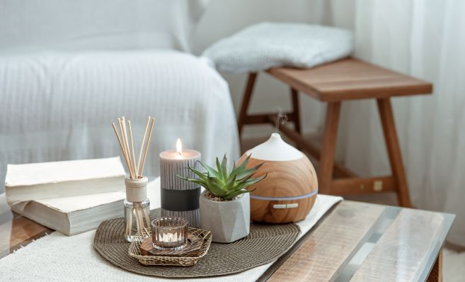
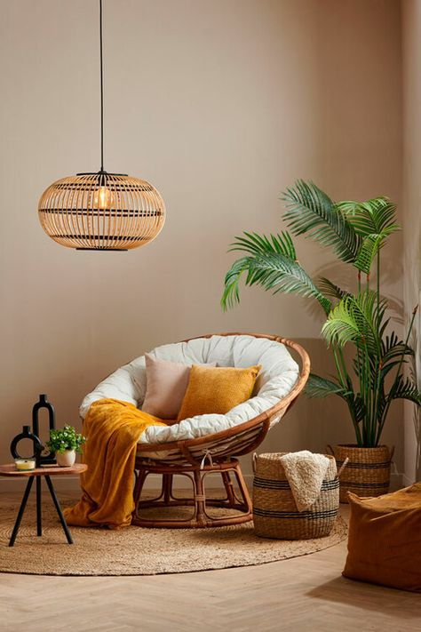
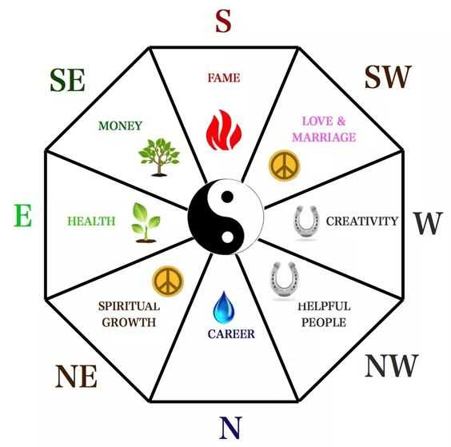

La energía Chi es pura cuando primero entra en la tierra, pero rápidamente pasa por varias transformaciones cuando se manifiesta en lo físico. Esta manifestación crea cinco expresiones de la energía chi que conocemos como elementos del feng shui. Estos cinco elementos deben interactuar para recrear la perfección de la energía chi en lo físico.
El Feng Shui es una filosofía que se basa en encontrar el equilibrio y aportar energías positivas a los lugares que habitamos. Su traducción, 'Viento y Agua', hace referencia al movimiento del Chi o flujo vital de energía, que forma parte de todo y todos y cuya circulación propicia salud, prosperidad y una vida armoniosa. Ya sabes: si cuidas de tu casa, tu casa cuidará de ti. Buscar un lugar óptimo para vivir: este ha sido el objetivo del Feng Shui desde sus inicios. La clave es crear un ambiente positivo y armonioso que mejore la vida de sus ocupantes.


EL MAPA NO ES EL TERRITORIO El mapa de feng shui bagua es un mapa de forma octogonal que le permite evaluar en términos de feng shui cualquier espacio de vida o de trabajo. El feng shui bagua es una herramienta de feng shui muy importante e indispensable cuando deseamos armonizar un lugar y los elementos en él.